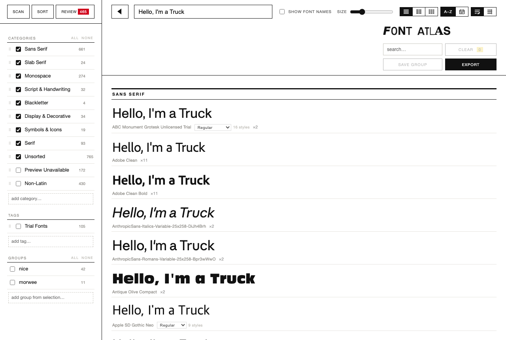

FONT ATLAS
index every font on your computer, and view it as a type specimen book. nothing gets moved.
this tool goes through your whole computer and finds every font you have, even the ones you downloaded once and never installed. it sorts them, without ever touching the files or file locations, into categories (serif, sans, mono…) and tags (trial fonts, art deco, good for posters, whatever you want), and then you type a headline and see it in all of them at once. click the ones you like, hide the rest, export as pdf.
localhost:8765

- unzip anywhere, open
Start Font Atlas.command(mac: if blocked, System Settings → Privacy & Security → Open Anyway, just once). windows / linux:python3 app.py. - scan. sort. select.
- export your picks as a pdf specimen sheet.
runs on your computer, needs nothing but Python 3 (macs have it), and never touches or uploads your fonts. optional AI sorting uses your own Anthropic key and only ever sends font names.